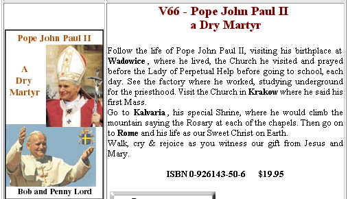

The Lord Pope - Sweet Christ On Earth?
There are currently at least five documents on the Vatican web site that use the blasphemous phrase "sweet Christ on earth" to describe the Pope-
46. ... In founders and foundresses we see a constant and lively sense of the Church, which they manifest by their full participation in all aspects of the Church's life, and in their ready obedience to the Bishops and especially to the Roman Pontiff. Against this background of love towards Holy Church, "the pillar and bulwark of the truth" (1 Tim 3:15), we readily understand the devotion of Saint Francis of Assisi for "the Lord Pope", the daughterly outspokenness of Saint Catherine of Siena towards the one whom she called "sweet Christ on earth", the apostolic obedience and the sentire cum Ecclesia of Saint Ignatius Loyola, and the joyful profession of faith made by Saint Teresa of Avila: "I am a daughter of the Church". ...
Vatican Source #1:  Pope John Paul II,
Apostolic Exhortation VITA CONSECRATA, (On The
Consecrated Life And Its Mission In The Church And In The World), March 25,
1996.
Pope John Paul II,
Apostolic Exhortation VITA CONSECRATA, (On The
Consecrated Life And Its Mission In The Church And In The World), March 25,
1996.
-
The same document at Eternal Word Television Network (EWTN)
7. ... With the same vigour, Catherine addressed Churchmen of every rank, demanding of them the most exacting integrity in their personal lives and their pastoral ministry. The uninhibited, powerful and incisive tone in which she admonished priests, Bishops and Cardinals is quite striking. It is essential — she would say — to root out from the garden of the Church the rotten plants and to put in their place “new plants” which are fresh and fragrant. And strengthened by her intimacy with Christ, the Saint of Siena was not afraid to point out frankly even to the Pope, whom she loved dearly as her “sweet Christ on earth”, that the will of God demanded that he should abandon the hesitation born of earthly prudence and worldly interests, and return from Avignon to Rome, to the Tomb of Peter. ...
Vatican Source #2:  Pope John Paul II,
Motu Proprio proclaiming Co-Patronesses of Europe, October 1st, 1999.
Pope John Paul II,
Motu Proprio proclaiming Co-Patronesses of Europe, October 1st, 1999.
- The same document at Eternal Word Television Network (EWTN)
- The same document at Catholic Information Network (CIN)
ST. CATHERINE AND THE PRIESTS:
A MESSAGE FOR THE CHURCH OF THE THIRD MILLENNIUMYour Eminencies, Excellencies, reverend and dear priests, I feel especially honoured to provide this small service to you, whom St. Catherine of Siena defines as "Ministers of the Blood of Christ", in this patriarchal Basilica, centre of Catholicism, housing the Chair of he who is the "Sweet Christ on earth". ...
Only the Pope could correct the defects of the priests, and not the laity who should always revere them, since Christ left to the Apostle Peter and his successors the key of His Blood, from which all the Sacraments gain life. The Pope, with ardent faith recognized by Catherine as "sweet Christ on earth" and called with tender affection "My kindest daddy" is asked to work strongly for the reform of the Church. "Intervene to eliminate the stink of the ministers of the Holy Church; pull out the stinking flowers and plant scented plants, virtuous men who fear God". ...
Vatican Source #3:
 Lecture by Professor Maria Antonietta Falchi Pellegrini, Vatican's
Paul VI Hall, (17 May 2000).
Lecture by Professor Maria Antonietta Falchi Pellegrini, Vatican's
Paul VI Hall, (17 May 2000).
... The twentieth century was one of the most crucial in human history, with its tragic and cruel events culminating in the assassination attempt on the “sweet Christ on earth”. Now a veil is drawn back on a series of events which make history and interpret it in depth, in a spiritual perspective alien to present-day attitudes, often tainted with rationalism. ...
Vatican Source #4:  Introduction to the Third Secret of Fatima, by Tarcisio Bertone,
SDB, Archbishop Emeritus of Vercelli, Secretary of the Congregation for the
Doctrine of the Faith.
Introduction to the Third Secret of Fatima, by Tarcisio Bertone,
SDB, Archbishop Emeritus of Vercelli, Secretary of the Congregation for the
Doctrine of the Faith.
The identical text regarding the Third Secret of Fatima also appears on scores of Catholic web sites, to include the following:
This Synod can be read, in this area, as an expression of full communion with and in the Universal Church, and with the Roman Pontiff His Holiness John Paul II "the sweet Christ on earth".
Vatican Source #5: Synodus Episcoporum 15 - 8.10.1999
Synodus Episcoporum 15 - 8.10.1999
The same text at Zenit:  Address by Rev. Sr. Irina - M. Ioana BOTA, O.S.B.M., Provincial
Superior in Romania of the Order of Basilian Sisters and President of the
Romanian Conferences of Superiors Major, Romania, October 8th 1999, to the
Twelfth General Congregation of the Second Special Assembly for Europe of the
Synod of Bishops, in the Vatican's Synod Hall.
Address by Rev. Sr. Irina - M. Ioana BOTA, O.S.B.M., Provincial
Superior in Romania of the Order of Basilian Sisters and President of the
Romanian Conferences of Superiors Major, Romania, October 8th 1999, to the
Twelfth General Congregation of the Second Special Assembly for Europe of the
Synod of Bishops, in the Vatican's Synod Hall.
The phrase "sweet Christ on Earth" is a quote of St. Catherine of Siena [1347-1380] who used the phrase in a letter to Pope Gregory XI-
... I tell you, sweet Christ on earth, on behalf of Christ in Heaven, that if you do this, without strife or tempest, they will all come grieving for the wrong they have done, and lay their heads on your bosom. Then you will rejoice, and we shall rejoice, because by love you have restored the sheep to the fold of Holy Church. And then, sweet my father, you will fulfill your holy desire and the will of God by starting the holy Crusade, which I summon you in his name to do swiftly and without negligence. They will turn to it with great eagerness; they are ready to give their lives for Christ. Ah me, God, sweet Love! Raise swiftly, father, the banner of the most holy Cross and you will see the wolves become lambs. Peace, peace, peace, that war may not delay that happy time! ...
Source:  SAINT CATHERINE OF
SIENA VIRGIN, Letter to Gregory XI translated by Vida D. Scudder,
1906, from Lives of Saints, Published by John J. Crawley & Co., Inc.,
on EWTN's web site.
SAINT CATHERINE OF
SIENA VIRGIN, Letter to Gregory XI translated by Vida D. Scudder,
1906, from Lives of Saints, Published by John J. Crawley & Co., Inc.,
on EWTN's web site.
Following are remarks reportedly made at the Mass celebrating Pope John Paul II's 80th birthday:
... In a greeting before the Mass, Cardinal Dario Castrillon Hoyos, prefect of the Congregation for Clergy, told the pope that those gathered prayed that God might let him ``still guide us for a long time.''
``We feel that we are led by a man of God, who has won love and respect beyond every human barrier,'' he said.
``The Lord has truly prepared an athlete to untiringly travel the streets of the world,'' said the Colombian cardinal.
``Thank you, sweet Christ on earth, for those white hairs, for the suffering which has made you even more dear in our eyes, for your steps, as spiritually intrepid as physically tired,'' he said. ...
Source:  John Norton
for the Catholic News Service, May-18-2000
John Norton
for the Catholic News Service, May-18-2000
... How great then was the saint’s respect and passionate love for the Roman Pontiff! Today, we personally, the lowest servant of the servants of God, owe an immense recognition to Catherine, not indeed for the honor that might redound to our humble person, but for the mystical apology she made of the apostolic office of the successor of Peter. Who can forget it? She saw in him "the sweet Christ on earth," to whom is owed filial love and obedience, because, "He who will be disobedient to Christ on earth, who stands in the stead of Christ in heaven, will not share in the fruit of the blood of the Son of God." And, anticipating not only the teaching but the very language of Vatican II, the Saint wrote to Pope Urban VI, "Most holy Father . . . know the great necessity that you and the holy Church have to preserve this people (of Florence) in obedience and reverence to Your Holiness, for he is the head and principle of our faith." ...
Source:  Homily by Pope Paul VI on October 1, 1970, Given in the Vatican
Basilica when Saint Catherine, Virgin, was declared a Doctor of the Universal
Church.
Homily by Pope Paul VI on October 1, 1970, Given in the Vatican
Basilica when Saint Catherine, Virgin, was declared a Doctor of the Universal
Church.
... "You are the sweet Christ on earth who walks in our midst, and we love you and follow you. Twenty years ago you stole our heart and today we offer it to you." I greeted the Pope with these words just before Mass. ...
Source:  With the Pope in the Magliana neighborhood, (Nov. 8, 1998), by
Father Gerard McCarthy.
With the Pope in the Magliana neighborhood, (Nov. 8, 1998), by
Father Gerard McCarthy.
... "During his 21-year papacy, I have had the great fortune of meeting Pope John Paul II three times face to face in personal audiences. The first time was during his maiden visit in 1981 to Philippines; the second, in a gathering of university students and professors in Rome in 1985; and the last time, in his second visit to Manila in 1995. I pray to God that we Filipinos will have another opportunity to receive him in our country. By that time we should be able to beat our own record and gather ten million people in one place in order to pray with the Sweet Christ on Earth." ...
Source:  Man of the
Twentieth Century, by Bernardo Villegas, Manila Bulletin, Sunday, 7
November 1999.
Man of the
Twentieth Century, by Bernardo Villegas, Manila Bulletin, Sunday, 7
November 1999.
... We recognize and accept the authority of the Church as we do that of Christ himself. Our Holy Father the Pope is our dear sweet Christ on earth, as St. Catherine called him, even when she was pointing out with the liberty of a saint, how wrong he was at the time, in his conduct of temporal affairs.
Source:  "The Case of Father Duffy", By Dorothy Day, The Catholic Worker,
December 1949, 1, 4.
"The Case of Father Duffy", By Dorothy Day, The Catholic Worker,
December 1949, 1, 4.
4. ... Let us try to imitate this love and veneration for the Pope. His dignity as Vicar of Christ, as "the sweet Christ on earth," is a more than sufficient reason for us to feel wholeheartedly united to the Roman Pontiff, as a consequence of a genuine filial obligation.
Source:  A homily given by Bishop Javier
Echevarría, Prelate of Opus Dei, at St. Eugene's Basilica in Rome on
October 10, 2002, at the final Mass of thanksgiving for the canonization of
Josemaría Escrivá.
A homily given by Bishop Javier
Echevarría, Prelate of Opus Dei, at St. Eugene's Basilica in Rome on
October 10, 2002, at the final Mass of thanksgiving for the canonization of
Josemaría Escrivá.
 |
|
© Bob and Penny Lord |
Above is a screen capture from the
 "Journeys of Faith" web
site of Catholics Bob and Penny Lord, which also describes the Pope as "Our
Sweet Christ on Earth". Click on the image to visit that page on their site.
"Journeys of Faith" web
site of Catholics Bob and Penny Lord, which also describes the Pope as "Our
Sweet Christ on Earth". Click on the image to visit that page on their site.
Pope Pius II canonized Catherine of Siena in the year 1461, and she was proclaimed a Doctor of the Church in 1970 by Pope Paul IV. Her feast day is celebrated by Catholics on April 30. While John Paul II readily understands the devotion of Catherine of Siena, and Professor Pellegrini describes the phrase "sweet Christ on earth" as "ardent faith", it is nothing short of idolatry and blasphemy!